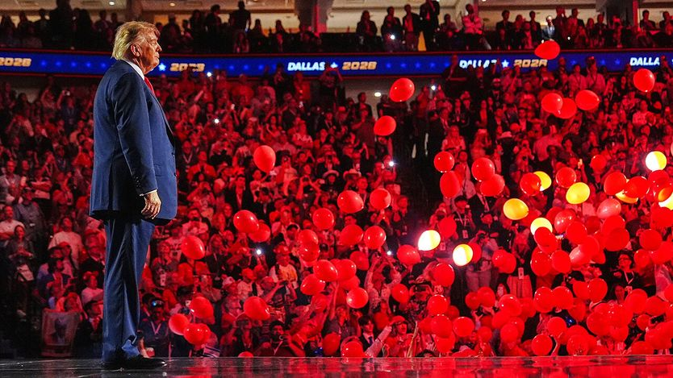
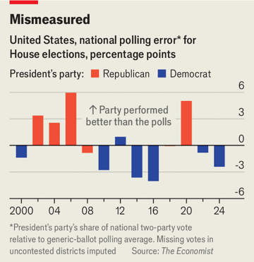

共和党人还能怎么保住众议院？
How House Republicans might fend off defeat
一次民调误差加上几个好运气，也许就够了

- 背景先交代：美国11月3日举行中期选举，众议院全部435个席位都要改选，民主党只要净赢3席就能夺回控制权。历史上总统所属政党在中期选举中通常会丢席位，加上特朗普支持率低迷、通胀持续、伊朗战争，环境对本届政府相当不利。《经济学人》的选举预测模型给民主党92%的胜算，博彩式预测市场也几乎同样看好民主党。
- 但10%的概率也会发生。特朗普阵营自2016年以来多次跑赢民调，这是共和党人唯一的希望所在。第一个可能翻盘的因素是民调误差：目前民主党在「如果今天投票你支持哪个党」这一问题上平均领先6.7个百分点，但2020年曾出现民主党实际得票比选前民调低约5个百分点的偏差。如果这次同样偏差，模型显示共和党反而会变成保住众议院的大热门。
- 第二个因素是共和党提前动手重划选区。美国通常每十年根据人口普查重划一次国会选区，但特朗普鼓励共和党控制的州在本次中期选举前就提前重划，为自己的政党多划出了约8个席位（如果最高法院上周没有拦下密苏里州的新选区方案，本可以是9个）。配合几十年来早已存在的选区操纵，如今全美只有5%至10%的众议院席位真正有竞争性。
- 真正的胜负手是候选人本身和选情气氛。在宾夕法尼亚州这样一个2024年让民主党人心碎的摇摆州，第8选区特朗普当年赢了8.5个百分点，共和党众议员布雷斯纳汉却只赢了1.5个百分点；两年前，温和派民主党州长夏皮罗在同一选区赢了10个百分点。说明这里的选民更多是看人而不是看党。而特朗普全国净支持率低至负25点，又执意要当选举主角，对这类摇摆选区的在任共和党人是沉重负担。
在特朗普时代，别把任何事当成板上钉钉。民主党是11月3日夺回众议院控制权的压倒性热门。历史上反对党在中期选举中通常表现良好，而特朗普极低的支持率、持续的通胀和伊朗战争，为其所属政党营造了格外恶劣的环境。《经济学人》的选举预测模型给民主党的胜算为92%，预测市场也几乎同样乐观。
然而，预计只有十分之一概率发生的事确实会发生，而特朗普和他的「让美国再次伟大」（MAGA）铁杆支持者自2016年以来已多次跑赢民调，足以让人留一分余地。共和党人可能通过什么路径逆势保住众议院？

全部435个选区都将改选，民主党只需净增3席就能夺回这一院。但一波重划选区潮让这件事变得更难。按惯例，各州每十年在人口普查后重划一次选区，而特朗普鼓励共和党控制的州在中期选举前提前重划。
尽管民主党也采取了反制措施，总统推动的这轮重划仍然奏效，据我们的模型，它给共和党净增了约8个席位。（如果最高法院上周没有拦下他们在密苏里州的新选区地图方案，本该是9个。）没有这一步棋，保住众议院看起来几乎不可能。「如果我们守住众议院，靠的就是这次十年中期重划，」为密歇根州处境艰难的共和党众议员汤姆·巴雷特工作的策略师杰森·罗说，「我并不同意这么做，但它确实创造了结果。」
这轮突击重划——叠加几十年来早已存在的选区操纵，以及美国人习惯与政治立场相近的人比邻而居——意味着如今只有5%到10%的众议院席位真正有竞争性，而共和党保住它们还有一线希望。可能对他们有利的因素有几个。第一个是民调误差。当民调机构询问选民「如果今天举行选举，你会支持哪个党的候选人」时，民主党平均领先6.7个百分点。如果大选日真的出现这么大的差距，民主党将轻松拿下众议院。但即便假设到11月这些数字没有大幅变化，只要出现一次类似2020年的民调误差——当时民主党在国会选举中的实际得票比选前通用民调低约5个百分点——局面就会改变，而我们的模型估计，那时共和党反而会成为赢得众议院的大热门。
到那时，那些一向重要的因素——候选人素质、负面广告的轰炸以及投票率——会变得更加关键。看看宾夕法尼亚州的几场胶着选战。宾州是2024年让民主党人心碎的摇摆州之一。在该州东北部摇摆不定的第8选区，特朗普2024年以8.5个百分点的优势赢得总统选举，而当年为共和党翻盘拿下该众议院席位的罗布·布雷斯纳汉只赢了1.5个百分点。再往前两年，该州温和派民主党州长乔什·夏皮罗在这个选区赢了10个百分点。
这个特定选区的选民为何如此摇摆？「我认为人们更多是投人而不是投党，」该选区最大城市斯克兰顿的市长佩奇·科涅蒂说，她今年正竞选夺回布雷斯纳汉的席位。科涅蒂以反腐败活动人士的身份进入政坛，至今仍在做这件事。在竞选活动中，她指出布雷斯纳汉在2025年进行了600多笔股票交易，并可能利用内幕信息获利。布雷斯纳汉否认有不当行为，称交易由其财务顾问负责。科涅蒂认为自己传递的信息与特朗普当初对选民的承诺有相通之处。「过去十年，人们从特朗普那里听到的是他要抽干沼泽，」她说。「我认为他只是为自己造了一片沼泽。」不过她理解「为什么他们想送一个人去华盛顿清理乱象」。
特朗普的净支持率为负25点，如此之低，而他执意要当这场选举的主角、嗓门又如此之大，对布雷斯纳汉这类脆弱的在任者形成沉重拖累。在宾州争夺激烈的第10选区，共和党在任者斯科特·佩里是右翼的众议院自由核心小组成员，用利哈伊大学政治学家克里斯托弗·博里克的话说，他「无法回避」特朗普的民意处境，「我不知道他是否想回避」。共和党人别无选择，只能押注于动员特朗普仍然热情的支持者，并把民主党描绘成极端派。如果特朗普的整体民意在11月前有所改善，会有帮助。举例来说，如果与伊朗的战争结束，这是可能的。
宾夕法尼亚州的民主党竞选策略师J·J·阿博特回忆起2024年，他沮丧地看着特朗普在摇摆州的民调随着选举临近稳步上升。「这是给民主党人的一个教训：他们不应假定他的数字不会往好的方向走，」他说。一次民调误判正好撞上共和党选情的快速回暖，可能性不大。但共和党保住众议院的概率是10%而不是1%，是有合理理由的。况且，美国人也见识过特朗普的「逃脱术」。